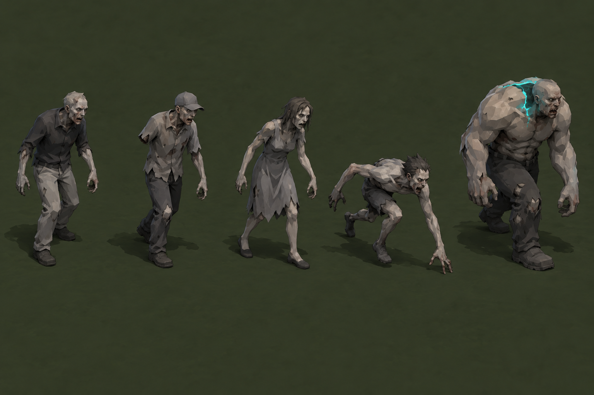

Three directions for the infected
This study has been expanded into the whole-game comparison, which shows matching structures, player units, zombies, and motion poses together. Every direction keeps ordinary zombies grey with lighter grey pants, using missing arms, baseball caps, and dresses for variation. Specials retain one recognizable design and a restrained neon marker.

A. Faceted miniatures
Organic low-poly figures rendered down to D's pixel budget. Broad anatomy and cloth planes survive at game size; we avoid the boxy heads of the current art.
These boards explore appearance and pose language only. Consistent movement requires a rigged source and verified frame atlases; independently generated images are not seamless animation.
Current baseline
The live zombie cast now uses the requested neutral colors and traits. Its existing atlas plays in the game while we choose which of these new styles to produce.